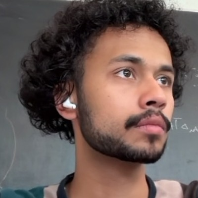

Hey! Welcome to my website.
I'm a physicist with a bachelor's from UC San Diego, working towards my PhD at Caltech.
Solving problems often requires tackling them head on or understanding tact. My core skills are communication, coordinating projects, leading teams and an approach to work that's hands-on and detail-oriented.
My research at UCSD was at the intersection of particle physics and machine learning, upgrading the readout for CERN's Large Hadron Collider using neural networks. At Caltech I'm working on looking for dark matter in cryogenic detectors, and this work overlaps with quantum computing and reducing radiation impacts on qubits. Outside the lab I've run budgets and operations: Vice President of Caltech's first labor union, Treasurer of the Graduate Student Council, and a board seat at a student-run cooperative bookstore.
I'm looking for quant research, finance, and consulting roles on the East Coast — summer 2027 internships now, and full-time from summer 2028.
Work
Résumé →Projects
GitHub →SuperCDMS hunts low-mass dark matter using germanium and silicon crystals held at 15 millikelvin, two kilometres underground at SNOLAB. I'm building the Python tool that turns detector data into a limit — an extended maximum-likelihood fit comparing a candidate signal against every background in the experiment (tritium, neutrons, coherent neutrino scattering, Compton events, surface betas, radon exposure, cosmic rays), carrying the uncertainty in detector resolution and energy yield as fitted nuisance parameters rather than fixed assumptions, and validating the whole thing against Monte Carlo trial datasets generated across the parameter space. The discipline is separating a small signal from a large, structured, badly-behaved background — and being able to defend the separation afterwards.
A cryogenic experiment is not photon-free: the surrounding fridge surfaces are warm relative to the detector, and they radiate. That radiation adds shot noise to a SuperCDMS sensor, and in superconducting qubits the same photons break the Cooper pairs a transmon depends on — but no end-to-end simulation of it exists. Geant4, the standard particle-physics toolkit, propagates optical photons as rays, which fails precisely here: blackbody wavelengths are comparable to the gaps between detector components, so the photons diffract. I'm extending Geant4 to handle that, scripting ANSYS HFSS from Python to solve the electromagnetic problem in each geometry and converting the field solutions into transmission probabilities and angular emission profiles the simulation can sample. Diffraction for a single frequency and geometry is written and validated.
The EMD is the physically meaningful way to compare two energy distributions, but it's not differentiable and standard implementations are too slow to train against. I trained a CNN to approximate it — 5% resolution, fast enough for the inner training loop — then used it as the loss for the on-detector compression encoder. It outperformed MSE-based training on physics performance. Published in MLST; presented at APS April Meeting.
Reconstructing individual particles directly from the compressed latent space of the calorimeter's on-chip encoder, using a GNN with object condensation loss. Reached 85% pileup mitigation accuracy in HL-LHC events with 200 simultaneous collisions. Presented at the A3D3 annual meeting.
Improving the ASIC encoder that sits on the detector itself and decides, in real time, which of 6 million channels' worth of data is worth keeping. Event-level selection on Monte Carlo data with uproot and awkward; trigger simulation in CMSSW. Work done with Fermilab; presented at the Fast Machine Learning for Science Workshop.
Scalar leptoquarks as a candidate explanation for the excess in B → D*τν. Built the models in FeynRules, simulated pp → b + c + τ + MET at the LHC with MadGraph_aMC@NLO, and checked the results analytically at leading order. Found improved sensitivity in the mT(τ) tail relative to previous searches.
Code for the EMD approximation lives at github.com/rohanshenoy/Ecoder.
Leadership & operations
Administered the Council's $120,000 annual budget on behalf of Caltech's graduate student body. Closed the year at a zero deficit — the first balanced budget since the pandemic, after several years of shortfall.
Elected Vice President of Caltech Graduate Researchers and Postdocs United, the first labor union in Caltech's history, representing 2,000 graduate students and postdoctoral researchers. Work centred on two things: federal science funding, and the rights of international researchers, whose employment and immigration status are tightly coupled and who therefore carry the most risk in any dispute.
Helping run a student-run workers' cooperative bookstore at UCSD — a real business with inventory, staff and filings, operated without a manager. Restarted inventory purchasing for the first time since 2009, recruited and trained the volunteer staff, and handled the co-op's tax filings. Roughly 1,000 hours.
Started the effort inside UCSD's physics department to build a better learning environment for all students.
Papers & talks
Poster at the Radiation Impact on Superconducting Qubits (RISQ) workshop (2026), on the blackbody photon simulation above.
Earlier talks and posters at the APS April Meeting (2022), the Fast Machine Learning for Science Workshop (2022), and the A3D3 Institute Annual Meeting (2022).
Toolkit
- Languages
- Python, MATLAB, Mathematica, Java
- ML
- PyTorch, PyTorch Geometric, TensorFlow — CNNs, graph neural networks, autoencoders, custom differentiable losses
- Data
- NumPy, uproot, awkward, coffea; Monte Carlo event samples at TB scale
- Physics
- CMSSW, CMS Open Data, MadGraph_aMC@NLO, MadAnalysis, FeynRules
- Other
- Git, GitLab, LaTeX
Otherwise
I'm reading arcane books on philosophy, digging into history or reading journals on international relations.